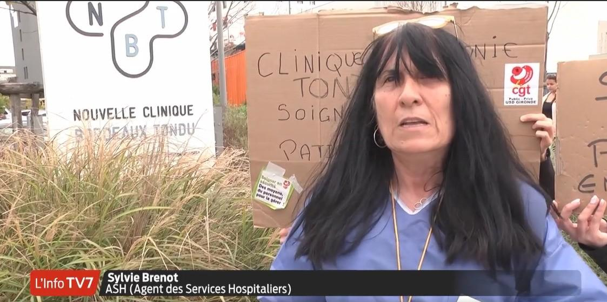

Une gréviste est licenciée à la clinique du Tondu : il faut exiger sa réintégration
mer. 30 novembre 2022
Source: www.revolutionpermanente.fr

France Culture - Les pieds sur terre - Clinique du Tondu
lun. 28 novembre 2022
Source: www.radiofrance.fr

Clinique du Tondu à Floirac : « La grève a été comme une révolution pour le personnel »
lun. 14 novembre 2022
Source: www.revolutionpermanente.fr

Nouvelle Clinique Bordeaux Tondu : les salariées en grève pour leur dû
ven. 11 novembre 2022
Source: lanticapitaliste.org

Après deux semaines de conflit, la grève se termine à la Nouvelle clinique du Tondu de Floirac
jeu. 10 novembre 2022
Source: www.francebleu.fr

Clinique du Tondu : deux semaines de grèves pour l'augmentation des salaires - @RevPermanente (video 4min38)
mer. 09 novembre 2022
Source: www.youtube.com

10e jour de grève à la clinique du Tondu, les salariés ouvrent une cagnotte
jeu. 03 novembre 2022
Source: france3-regions.francetvinfo.fr

La grève se poursuit devant la Nouvelle Clinique Bordeaux Tondu (video 30s)
lun. 31 octobre 2022
Source: www.facebook.com